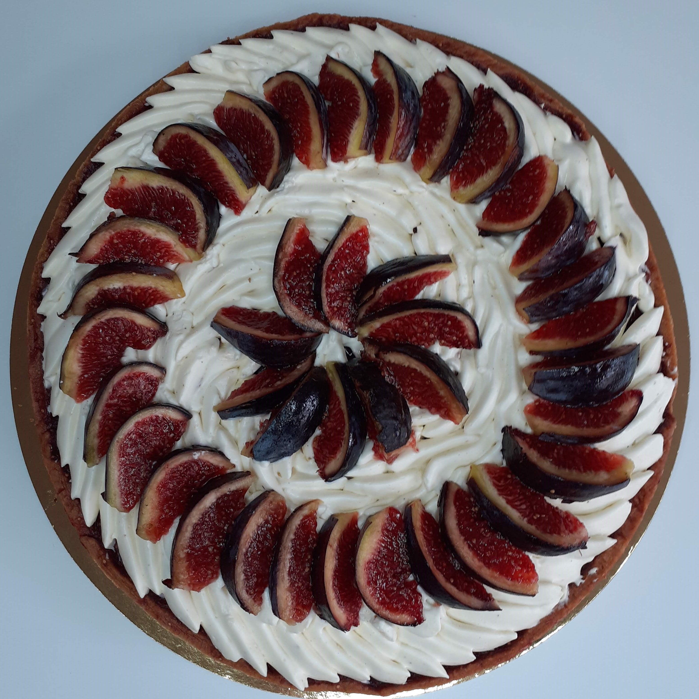
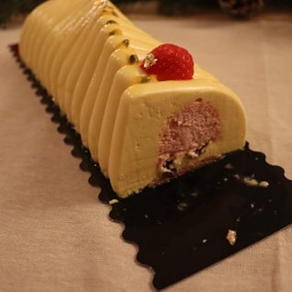

Après avoir regardé une célèbre émission télévisée sur la pâtisserie, je me suis mise à pâtisser des petits gâteaux du dimanche. J’avais l’impression de faire de grands exploits et pourtant c'était si peu. Après m’être acharnée dans la précision, la technique, après avoir demandé des retours constructifs à ma famille, j’ai pu faire de jolies créations. Certes, je suis encore au niveau amateur, mais je progresse petit à petit et je me fixe de beaux défis. J’ai pu faire les bûches de Noël en 2020 et j’ai aussi réalisé des numbers cake pour l’anniversaire de mon beau-frère et de mon conjoint.
Grâce à cette passion, j’ai pu progresser quant à ma précision mais aussi à ma dextérité (qui m’est bien utile dans mon métiers!). Mais j’ai aussi pu apprendre à gérer mon stress afin de rendre en temps et en heure mes créations, et également de le gérer lors des ratés ! Cela me permet de me canaliser quant à ma colère facile face à un échec.
La pâtisserie me permet également de partager des moments entre amis ou en famille. Finalement, la pâtisserie m’a permis de développer mon esprit créatif tant dans les goûts que dans la forme de mes gâteaux, tartes ou entremets !
Le respect d’un temps imparti et d’une commande, l’esprit créatif, le partage sont des activités que l’on peut retrouver dans le Master. En effet, on peut trouver un lien entre le fait de respecter une commande et le fait de répondre à un besoin de formation. Ces deux objectifs permettent de se soumettre à une demande et non de se cantonner à ce que l’on aimerait faire. Le fait de respecter un temps imparti pour une activité qui relève du loisir peut être mis en lien avec l’objectif de planifier et programmer ses activités pour le Master. Enfin un troisième lien que nous pouvons faire est l’évaluation, en demandant des retours constructifs à mes proches cela me permettait de m’évaluer pour progresser, comme le fait d’évaluer son dispositif de formation afin de l’améliorer pour les prochaines formations.
|
|
|  |  |